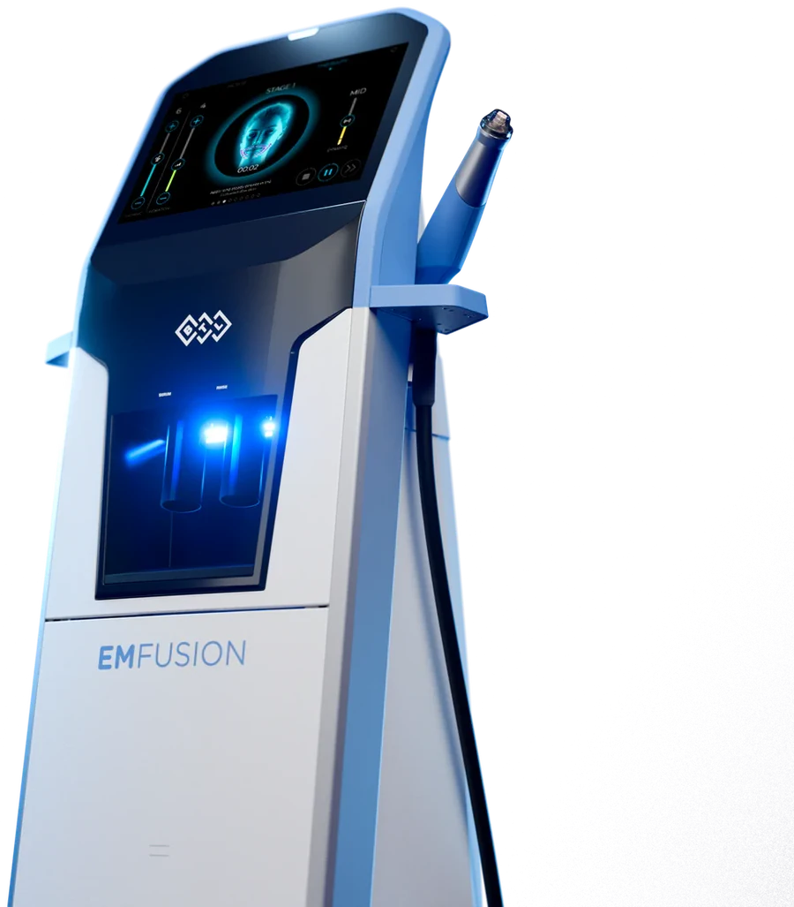

BTL EMFUSION in Penang | CANVAS Medical Clinic
The newest name in medifacials — physician-supervised BTL EMFUSION at our Gurney Walk clinic in George Town. This multi-step platform combines deep cleansing, active infusion, radiofrequency and light in one comfortable, no-downtime session, for skin that looks visibly clearer, firmer and lit from within.


What is BTL EMFUSION?
BTL EMFUSION is one of the latest medifacial platforms from BTL — the company behind EMSCULPT and EMFACE — bringing several proven skin-treatment steps together into a single, streamlined session. Rather than one action, it layers a sequence: deep exfoliation and cleansing to clear congestion, infusion of targeted serums and hydration, radiofrequency to gently warm and firm the skin, and light therapy to finish — a genuine multi-technology facial rather than a single-step treatment.
At CANVAS Medical Clinic in George Town, Penang, EMFUSION sits at the premium end of our medifacial menu — the treatment for patients who want visible clarity, hydration, firmness and glow from one comfortable session, with no downtime. Because the protocol is customisable and gentle, it suits most skin types and works beautifully as event-prep or as regular maintenance alongside clinical treatments.
How it works
- Consultation & skin assessment. Your provider assesses your skin and tailors the EMFUSION protocol and active serums to your concerns.
- Cleanse & exfoliate. Deep exfoliation and cleansing clear congestion and prepare the skin to absorb actives.
- Infuse & firm. Targeted serums and hydration are infused, with radiofrequency warming the skin to firm and boost absorption.
- Light finish & glow. Light therapy completes the session; skin looks immediately cleaner, plumper and radiant — with no downtime.
Benefits
Several treatments in one
Exfoliation, infusion, radiofrequency and light in a single session.
Immediate radiance
Skin looks visibly clearer, plumper and glowing straight away.
Firming dividend
Radiofrequency adds a gentle firming step most facials lack.
No downtime
Comfortable and relaxing, with immediate return to your day.
Customisable
Protocol and serums tailored to your skin each visit.
Latest BTL technology
A new-generation medifacial from a trusted device maker.
Who it's for
BTL EMFUSION may be suitable if you:
- Want visible clarity, hydration, firmness and glow in one session
- Like the idea of a facial that also firms with radiofrequency
- Have an event and want your skin at its best with no downtime
- Want a premium medifacial customised to your skin
- Are maintaining results between clinical treatments
- Prefer a comfortable, relaxing skin-health session
EMFUSION is a gentle, no-downtime medifacial suitable for most skin types; active skin infections or certain conditions are assessed first, and radiofrequency steps are adjusted or avoided where not appropriate. A provider confirms suitability at consultation. Suitability is always confirmed at consultation.
EMFUSION vs a standard medifacial
A standard facial cleanses, exfoliates and nourishes. EMFUSION adds two clinical steps most facials don't have — active serum infusion enhanced by radiofrequency, and a light-therapy finish — so a single session delivers cleansing, hydration, firming and glow together. It is a medifacial in the fullest sense: several evidence-based skin actions combined on one platform.
For customised skin-health maintenance, our Dermalogica facials are an excellent regular option; for firmness-plus-glow in one premium session, EMFUSION leads. For deeper correction, your physician will point you to clinical treatments like PRX-T33, peels or RF tightening.
Why CANVAS
At CANVAS Medical Clinic, EMFUSION is delivered on genuine BTL technology within a physician-led clinic — so a treatment that pampers also sits alongside honest advice on when a clinical treatment would serve a concern better.
We are located at Gurney Walk in the heart of George Town, with covered parking at Gurney Walk and Gurney Plaza. Walk-ins are welcome but we recommend booking in advance.
- LCP-certified physicians plan and supervise every BTL EMFUSION treatment
- Assessment and screening before treatment — honesty before sales
- We'll tell you if another approach suits your goals better
- A full treatment formulary under one roof for a genuinely tailored plan
- Central Gurney Walk location with easy covered parking
BTL EMFUSION in Penang, answered.
Care led by our physicians
Your BTL EMFUSION treatment at CANVAS is planned and supervised by qualified, LCP-certified doctors registered with the Malaysian Medical Council — care is never delegated to unsupervised operators. Meet the physicians behind your treatment:
- LCP CertifiedPhysician-led care
- MMC RegisteredQualified doctors
- Genuine SystemsAuthentic & registered
- Open Daily10am – 10pm
Related treatments
Explore other physician-led treatments at our Gurney Walk clinic in George Town, Penang.
From our patients
Read our reviews on Google →Considering BTL EMFUSION in Penang?
Book a BTL EMFUSION session at our Gurney Walk clinic — a premium, no-downtime medifacial that cleanses, hydrates, firms and glows in one, tailored to your skin.
Reserve a Consultation